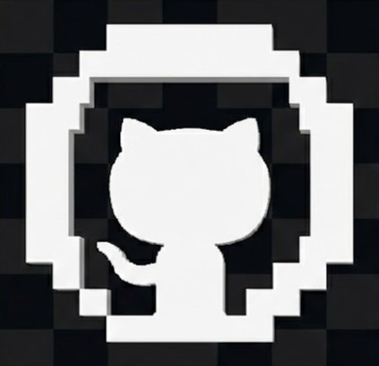
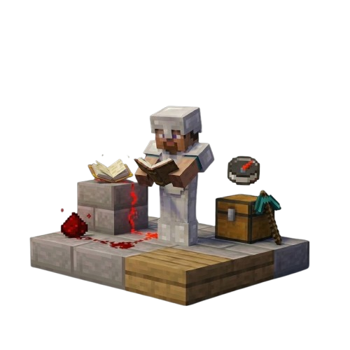

Paramètres
Langues
Decouverte

GitHub
xylindev
El-Khaïr NOURDINE
its.xylin
Discord
itsxylin
Recherche : Alternance dès septembre 2026 afin d'acquérir et renforcer mes compétences au service d'une entreprise.
Je suis El-Khair NOURDINE,
Actuellement en 2ème année de BUT Informatique, je construis mon expertise en développement Full Stack Web & Mobile.
Qui suis-je ?
D'un monde de blocs vers un futur de code
Mon intérêt pour l'informatique est né au coeur de la communauté Minecraft.
Découvrir tout ce qu'il était possible de réaliser à partir d'un simple fichier texte m'a passionné, et c'est ce qui m'a tracé la voie pour devenir développeur Fullstack Web & Mobile.
Actuellement étudiant en BUT Informatique à l'IUT de Lille, j'acquiers chaque jour les compétences nécessaires pour transformer cette passion en un véritable métier.
Durant mon temps libre, j'aime explorer l'interaction entre le monde physique et virtuel via l'Arduino pour donner vie à des créations hybrides.
Apprendre, comprendre, expérimenter et relever sans cesse de nouveaux défis : voilà ce qui définit mon objectif constant.

Parcours académiques
BACCALAUREAT STI2D
OPTION SYSTEMES D'INFORMATION ET NUMERIQUE
Lycée Jean Hinglo, Le Port, La Réunion
2022 - 2024
BUT INFORMATIQUE
PARCOURS RÉALISATION D'APPLICATIONS
IUT de Lille, Villeneuve-d'Ascq, France
2024 - En cours
Compétences techniques & comportementales
Développement
Frameworks & Bibliothèques
Outils & IDE
Base de données
En cours d'apprentissage
Autodidacte Autonomie & Curiosité
Rigueur / Sens du détail
Persévérance & Polyvalence
Adaptabilité
Esprit d'équipe
Écoute & Communication
Projets universitaires et personnels
Dream's - Bot Discord Utilitaire & Modération
À propos du projet
Dream's Bot est un assistant Discord polyvalent conçu pour simplifier la gestion de vos serveurs. Bien que le projet soit encore en phase d'évolution, il propose déjà des outils de modération robustes et diverses fonctionnalités utilitaires pour rendre votre communauté plus interactive et sécurisée au quotidien.